Stan: Sprawna - 1200PLN (do negocjacji) - Pochodzenie: Solaris Urbino 18 III Hybrid
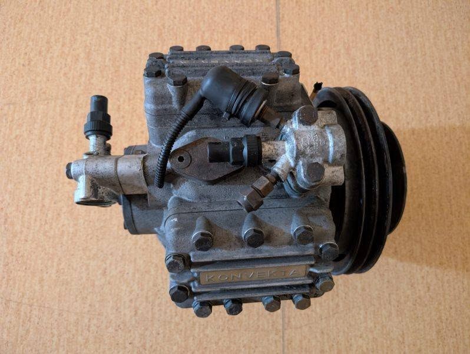
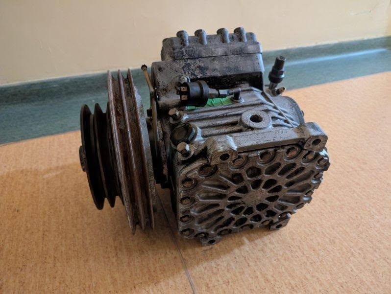
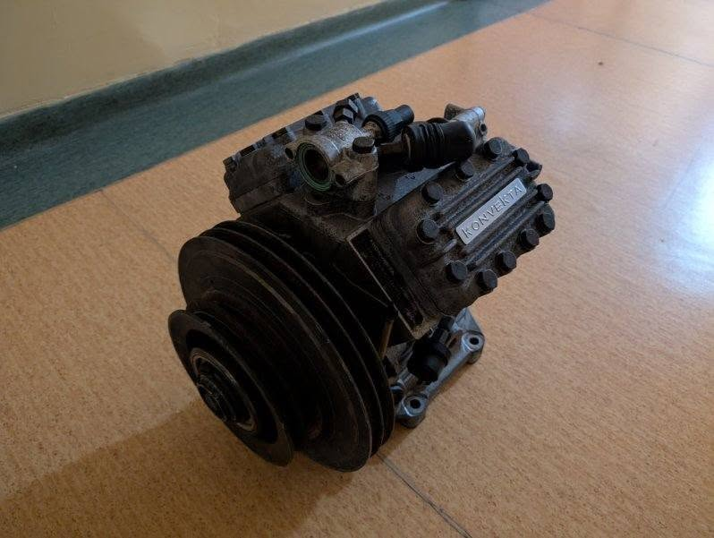
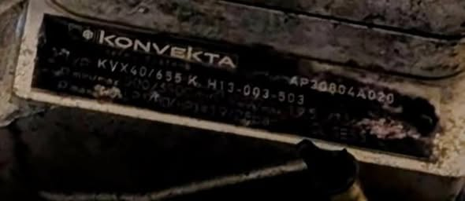
Stan: ??? - 200PLN (do negocjacji) - Pochodzenie: Jelcz M11
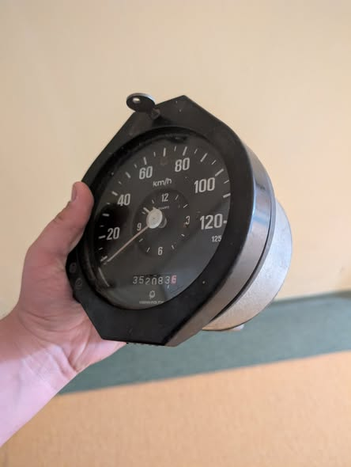
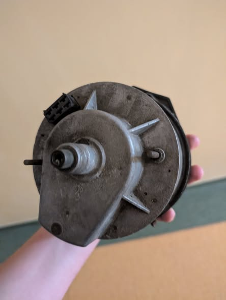
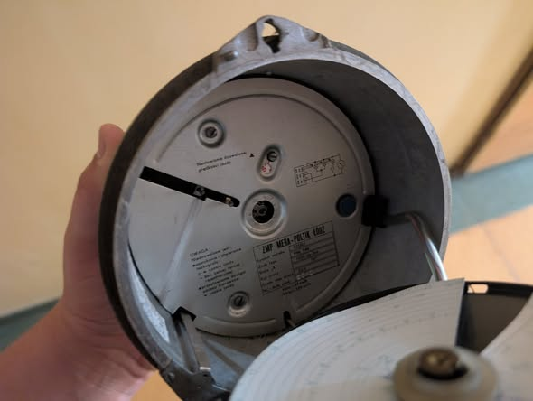
\Stan: Nietestowany (Sprawny?) - 100PLN (do negocjacji) - Pochodzenie: MAN NG312
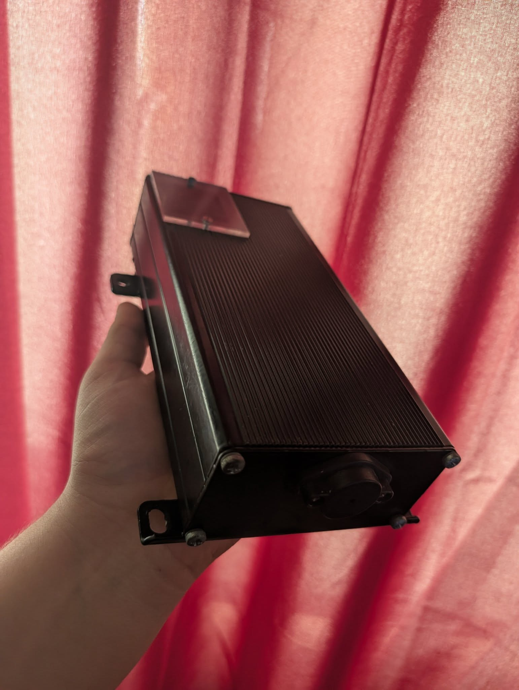
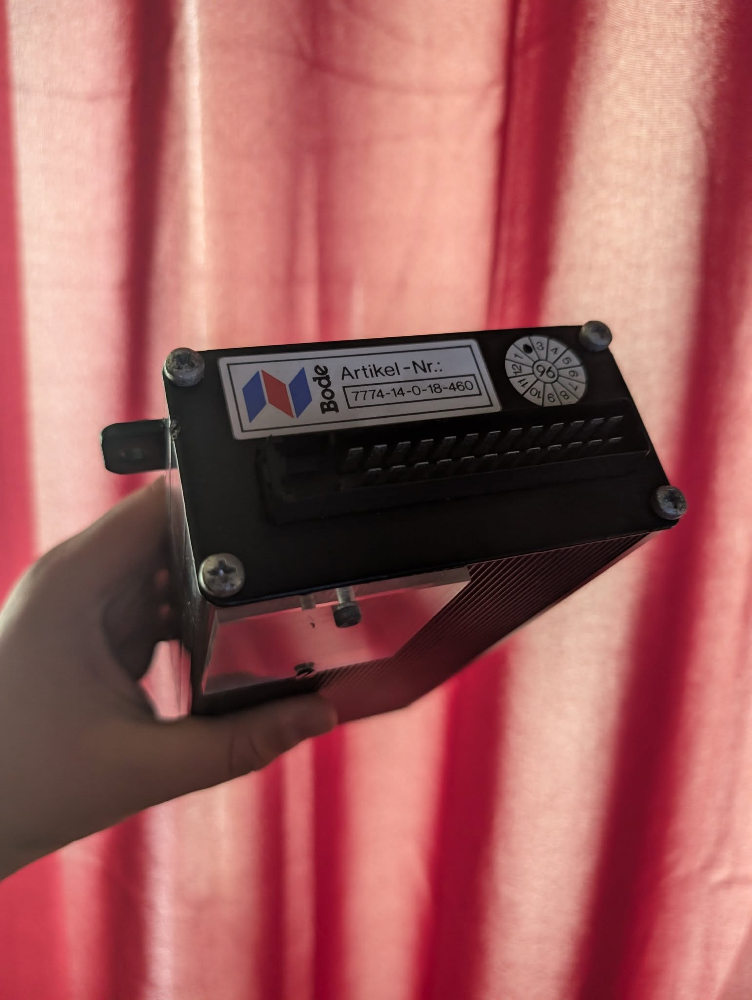
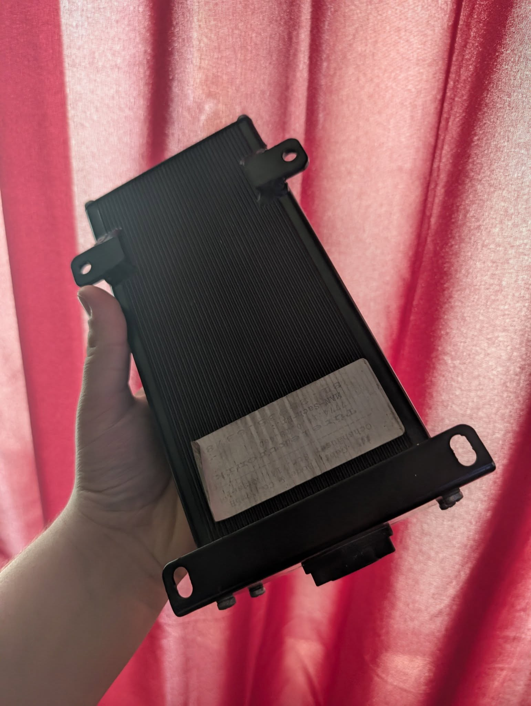
Stan: Kompletny - 100PLN (do negocjacji)
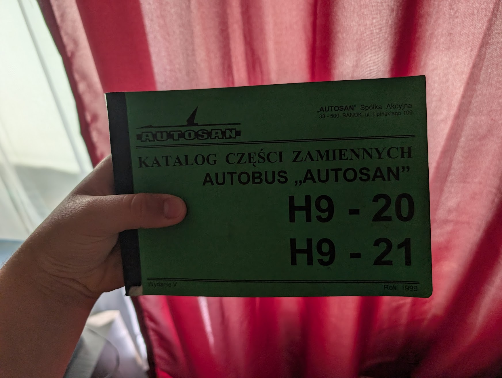
Stan: Kompletny - 100PLN (do negocjacji)
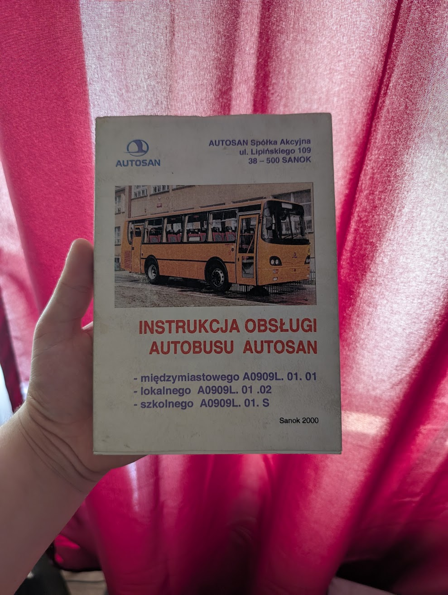